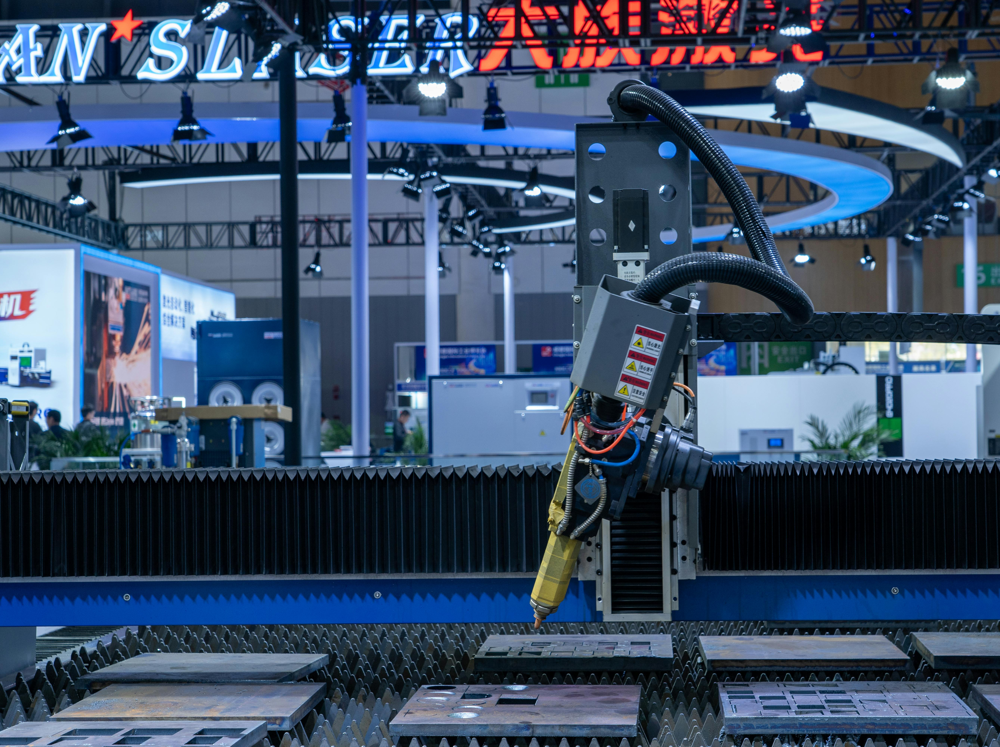

1
Match
Student and employer express mutual interest during the summit.
The summit is not meant to end at networking. It is designed to support project-based digital internships with clear steps, defined deliverables, and measurable follow-up.
Student and employer express mutual interest during the summit.
A warm follow-up introduction is made after the event.
The project challenge, timeline, and expected outcome are defined.
A simple digital internship agreement can be signed.
The student works on the project with check-ins and support.
The final deliverable is presented to the employer or partner.
Outcomes are documented for impact tracking and future planning.



Internship placements within 30 days.
Projects should have clear scope, timeline, and deliverables.
This structure can grow into a stronger Year 2 model.